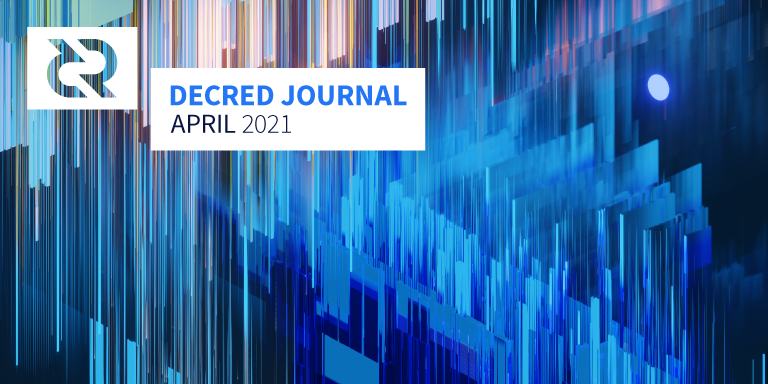

Decred月报 – 2021年4月

图片:@saender
四月亮点：
- Decred的第六次共识投票已获得一致通过并获得了很高的参投率。
- Politeia v1.0现在更具可扩展性并且是面向未来的基础架构。
- 正在对Politeia的第一个开发提案进行投票，以正式确定发展路线和预算。
- DCRDEX正朝着v0.2更新的方向发展，它对后端和UX进行了一些改进，并为将来令人兴奋的功能奠定了基础。
- 初始版DCRDEX集成已合并到Decrediton中。
内容：
开发进展总结
除非另有说明，否则此处报告的工作仅限为“合并到主核心存储库”状态。这意味着这项工作已经完成、审查并集成到高级用户可以构建和运行的源代码中，但对于普通用户来说，还不能使用。
- 代码库已转换为使用新
stdaddr程序包。现在，处理地址的代码支持不同的脚本版本，并且距离能够干净地引入新的脚本语言版本仅一步之遥。与大的更改一样，为了使审核更容易，此操作被分成一系列单独的提交，以便每一个步骤的每一步都建立并通过所有测试。 - 引入UTXO数据库。它为专门的UTXO数据库实现铺平了道路，可以在处理时间和内存使用方面提高效率。
- 在最后11个区块中增加了中位时间来表示详细信息
getblock和getblockheader结果（由DCRDEX使用） - 允许指定网络接口以使用其名称以及确切的IP地址进行侦听
dcrd v1.4.0与最新版本之间的初始链同步比较显示了所有改进如何累积到性能上的巨大差异。尽管现在的块增加了约70％，但最新版本几乎需要花费相同的时间来同步，同时分配的内存更少。
- 初始DEX集成
- 允许使用现有的电子钱包帐户代替DEX
- 添加了QR码生成功能以导出活动选票（用于使用Decred Address Scanner应用程序进行跟踪）
- 选票自动购买设置记忆
- 添加了一个迁移，以使用钱包密码来初始化帐户密码。此外，某些操作（发送，购买票证，混合，吊销）切换为仅解锁单个帐户，而不是解锁整个钱包。
- 创建后锁定新帐户
- 允许恢复最多128个字符的十六进制种子（包括BIP0039种子）
- 更新了交易, 提案和购票视图的设计
- 许多较小的设计调整
- 切换到严格的Protobuf生成，而没有eval()并且仅限于https使用CSP标头通过生产版本访问外部服务器
- 状态管理重构，关注点分离，依赖关系升级
- 增加测试范围
- 修复约为24个bug
正在准备v1.6.3版，其中包括许多上述更改。
Politeia v1.0.0已发布，具有新的存储后端，简化的API，新的插件体系结构和5个插件。阅读发行说明以获取有关每个功能的完整详细信息。新版本已部署在proposals.decred.org上。
2FA双重验证已支持。用户可以在帐户设置中进行设置。不要忘记备份密钥。
四月份合并：
- 为了方便起见，在proposal.decred.org上列出了proposals-archive.decred.org中的提案
- 使用新
politeiaverify工具验证评论和投票 - 在购买历史中列出注册费
- 修复了新版本中发现的约24个bug
一个显着的变化是添加了时间戳以进行投票。在Git后端，没有存储准确的时间戳以改善选民的隐私，因此，只能确定是否在约60分钟内进行了投票。在tstore中，Trillian已经记录了后端时间戳，除非编写自定义Trillian实现，否则无法更改此时间戳。由于表决时间戳现在无论如何都是公共数据，因此将其直接添加到表决结构中可使dcrdata更加轻松地获取它（例如，构建其表决图）。但这也意味着对于一次投票的人们来说，隐私权会有所降低。谁想要保护自己的隐私的人，强烈建议使用politeiavoter的功能。
@lukebp讨论了Politeia的发展，最新版本以及Decred in Depth播客的未来方向（从12分钟开始）。
Politeia自己的第一个提案现已上线（并投票），正式制定了其发展路线图和预算，直至2021年底。
- 改善连接性
- 更有效的 矿工 处理
- 支持解锁特定帐户（对于Decrediton）
- 在用户支付注册费之前显示重要的服务器信息（例如最小可交易量）
- 更好地处理无效订单
- 使用中位数时间完成交易
- 确保所有费用费率均受配置限制
- 减少数据库升级期间的内存使用量
- 响应式GUI
- 支持CPU和HTTP分析
- 改进了couch测试体验
- 为服务器API和资产后端添加了版本控制
- 修复了一些同步问题
5月发布了有关第2阶段开发的更新，其中包含以下要点：
- v0.2版本已完成Beta测试，预计二进制文件和服务器将很快更新
- v0.2带来了许多改进，包括对即将到来的Decrediton集成的支持
- 计划在今年的下一个版本中同时支持Decred和比特币的SPV钱包
- ETH开发正在进行中，预计将在第二阶段结束时发布
- 有关更多激动人心的功能，请阅读更新和链接的发行说明
人员
在@lukebp和@phoenixgreen的新采访中认识Decred的贡献者。
截至5月1日的社区统计数据：
- Twitter 粉丝: 44,391 (+763)
- Reddit 订阅: 10,987 (+190)
- Matrix #general 用户: 434 (+27)
- Discord 用户: 1,566 (+157)
- Telegram 用户: 2,645 (+51)
- YouTube 订阅: 4,500 (+40), 观看: 182K (+3K)
- GitHub dcrd 星: 591 (+2), 叉: 254 (-1)
有关重要的社交媒体统计信息更新，请参阅4月的报告。
治理
4月份，国库获得了10,949 DCR，支出了984 DCR。使用4月份的平均DCR费率198.60美元，这就是收到的217万美元和花费的19.5万美元。以3月份的平均汇率$ 161.01计算，费用为15.8万美元。截至5月2日，国库余额为672,768 DCR（1.4亿美元，合208.13美元）。
支持新国库的共识投票获得了99.9％的赞成和83％的选民参与。这是Decred历史上第二高的选民投票率，仅次于2017年的stake难度投票（88％）。
提案新闻：
- v1.0.0的部署伴随着一项新的资助Politeia开发的提案。该提案要求最高预算为11.8万美元，以涵盖一系列新功能，预计将在六个月内交付。该路线图的功能包括对插件体系结构的另一次升级，用户API的大修，无电子邮件帐户，提案的额外元数据，提案生命周期以及提案作者更新。投票于5月11日开始。
- 视频制作第3阶段的提案获得了98％的批准，40％的选票参与。
- 2021年剩余时间的设计领域提案已获批准，批准率为97％，投票者参与率为28％。
有关本月提案的更多详细信息，请参见Politeia第42期。
网络
全网算力: 四月 哈希率 以464 Ph/s的开启，以429 Ph/s结束，最低为219 Ph/s，峰值587 Ph/s。
5月1日哈希率分布：Poolin 35％，Antpool 28％，F2Pool 18％，Easy2Mine 4％，BTC.com 1.8％，Luxor 1.3％，UUPool 0.09％，Coinmine 0.06％，Huobipool 0.02％，其他12％。这次，哈希率与1,000个实际开采的区块的分布紧密匹配。
哈希率在4月15日至20日之间急剧下降，这归因于中国的一次重大电力中断。
Staking: 选票价格在163.5-204.1 DCR之间变化，30天的平均在185.8 DCR。
锁定量为7.11-7.51 百万DCR，这意味着循环供应的55.4-58.5％在购票。
VSP: 5月1日，7.1k（+ 0.5K）选票由vspd服务器管理，而2.2K（-1.8K）由列出的旧版dcrstakepool服务器管理。15个旧版VSP和13个新VSP总共管理了选票池的23％。最近被除名的2个旧版VSP仍具有105张live选票。
节点: 根据dcrextdata，在整个四月份，大约有约210个可链接节点。
截至5月1日快照的节点版本（总共257个，仅dcrd）：v1.6.0-26％，v1.6.2-24％，v1.6.1-22％，v1.5.2-7％，v1.5.1-7％， v1.7开发人员版本-7％，v1.6开发人员版本-4％，v1.5.0-2％。
混币的份额从44％略降至42％。每日混合量在150-300K DCR之间变化。
在LN上发现了野牛的存在，这是一个名为“ El Gran Bisonte”的节点⚡🐂⚡.
生态系统
以0.3％的费用欢迎来自Sponsory.com的新vspd服务器-撰写本文时，该价格是市场上最低的。其旧版VSP服务器已从清单中删除，但截至5月7日，仍可使用80张现场门票运行。
观察到dcr.farm的旧版VSP需支付30％的费用，这可能是为了阻止新的注册。注意避免意外购买高价票的费用。dcr.farm的vspd服务器正常收取0.95％的费用。
Baap ATM发推文说，他们的ATM和代理商将帮助在加拿大的某些地区购买用于CAD的DCR。
警告：Decred Journal的作者不了解上述任何服务的可信赖性。在将您的个人信息或资产信任给任何人之前，请先进行自己的研究。
加入我们的##services聊天，以关注Decred生态系统更新。
外展活动
已经建立了一个新的流程，可以在多个平台上广播重要的项目公告。“ ANN”仅用于重要更新，与Decred的Twitter相比，流量要低得多。Matrix房间#dcr 是最新添加的，其他目的地是：Twitter, Telegram, Discord, Reddit, CoinGecko, Blockfolio, 和 Gab。
Reddit的支持者在有关r / CryptoCurrency的多个相关对话中(1, 2, 3, 4, 5, 6)解析Decred。谢谢大家的宣传。
Monde PR四月份的成就：
- 创建/编写2个故事以资助和加密出版物
- 获得2次媒体采访
- 回应了1条评论请求
Monde PR保证的新闻报道：
- 在Bankless Times播报了去中心化国库
- 加密播客上对@lukebp的采访
活动
参加：
- 4月21日 - Blockchain Land - 互联网。@adcade讨论了“关于加密货币的观点”和加密货币的未来，这是Talent Land参与Decred参与Blockchain Land的一部分。小组在虚拟世界Decentraland和Cryptovoxels中进行了流媒体播放。
媒体
精选文章：
- Decred做出共识变更以进一步分散1.28亿美元的国库(banklesstimes.com)
- 么是Decred和DCR？由Ivan(ivanontech.com)
视频:
- Decred in Depth (live)采访Luke Powell @elima_iii (youtube)
- Decred in Depth (live)采访Decred Society @elima_iii (youtube)
- Decred的提案平台Politeia：@Exitus的〜1.25亿美元Decred DAO背后的决策力量 (youtube)
- 货币的演变 @phoenixgreen (youtube)
- 数字现金的互操作性 @phoenixgreen (youtube)
- Decred价格分析 2021年4月27日Josh Olszewicz(youtube)
@karamble已在tube.decredcommunity.org上镜像了所有Decred YouTube频道的视频。它由PeerTube提供支持-PeerTube是YouTube的一种开源，自托管，轻量级替代方案，可以连接到Fediverse。这是普通用户的工具列表。运行PeerTube实例的管理员可以通过设置关注和冗余来帮助使内容更具弹性。
音频:
- Rough Consensus 18: 牛市忧郁症-Checkmate，Permabull Nino和Mister Black (libsyn, spotify)
- Keyword: Crypto Podcast-Decred的Luke P (youtube, keywordcrypto.com)
翻译:
- Decred区块链分析-第2部分 - 西班牙语 by @francov_
- Decred Journal 2021年3月月报被翻译成阿拉伯文（@arij，@ abdulrahman4），中文（@Dominic）和西班牙文（@francov_）。谢谢你们！
其它非英语内容：
- @Dominic跟mable题为“关于Decred的混合共识和集体智慧的结晶”，由Multicoin资本的51％播客节目20(apple, simplecast.com)
社区讨论
通讯系统新闻：
- DM诈骗者加入了#support，这是一种新的骗子形式。请注意，任何管理员或开发人员都不会向您DM或索要您的钱！
精选的Reddit帖子：
精选Twitter讨论：
对于相信“市场”做出最佳决策的人来说，比特币可能是正确的选择。在任何有争议的更改期间，网络可能会分为两个或多个分支，这两个分支将争夺（战斗）PoW矿工，开发商，投资者和交易所的财务和社会支持。
对于那些相信协作，渴望追求共同利益，并愿意在权力下放的选民集体的总体意愿中团结一致的人来说，Decred可能是正确的选择。
比特币和Decred是不同的社会契约。它们可以共存。(@overthrowy)
市场
4月DCR交易价格在169.50-243.70美元 / BTC 0.0031-0.0040之间。每日平均价格为 198.60美元。
相关外部信息
Fei“稳定币”于4月初推出，但违背了预期，其交易价格大大低于1美元的目标。由于新颖的激励和烧伤机制的复杂且不可预测的行为，这使许多投资者处于无法退出FEI头寸而不会蒙受重大损失的位置。在发布大约1个月后，FEI最终实现了其1美元的目标。
Yearn Finance社区一直在讨论YIP-61的“治理2.0”，它扩展了YIP-41临时实施的多重签名安排，并以99.97％的赞成票获得批准。该提案还将某些权力委派给Yearn贡献者团队（“ yTeam”），并“阐明” YFI持有者的作用主要是将权力下放给这些团队并批准YIP。
NFT子社区通过销售100种赋予支持该平台的DAO投票权的NFT的机制，为其自己的新媒体平台（NFTs WTF）进行众筹。有趣的是，该帖子宣布了众筹的第一阶段，其中出售了100个控制代币中的51个，仅将3个出售给了风险投资家，并且仅以个人而非其组织的代表的身份出售。
Coinbase开始在纳斯达克（Nasdaq）出售股票，不像首次公开募股那样，不涉及发行新股，而是现有股东将其中的一部分推向市场。
四月就这些了。在这里提交您的故事或简单地分享您的反馈。我们一直在寻找改善DJ的贡献者！
关于月报
这是Decred Journal的第37期。有关所有问题，镜像和翻译的索引，请参见这里。
在经过最少的健全性检查之后，来自第三方的大多数信息都会直接从来源中继。Decred Journal的作者无权验证所有声明。请当心诈骗，并自行进行调查。
感谢 (字母排列):
- 写作和编辑: bee, degeri, l1ndseymm, richardred
- 评论和反馈: chappjc, davecgh, jholdstock, lukebp
- 封面图片: saender
- 资助: Decred stakeholders